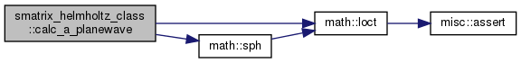
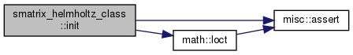
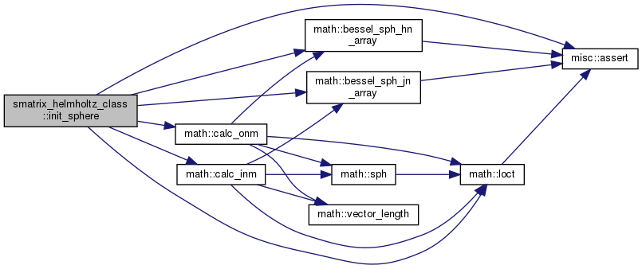
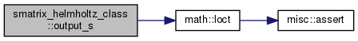

3D-HelmholtzのS行列 [詳解]
データ型 | |
| type | smatrix_helmholtz |
| 3D-HelmholtzのS行列 [詳解] | |
関数/サブルーチン | |
| subroutine | init (self, mesh, b_condition, w, cs, nmax) |
| BEMを用いてS行列を作る [詳解] | |
| subroutine | init_sphere (self, mesh, b_condition, w, cs, nmax) |
| 散乱体が球の場合について，解析解を用いてS行列を作る [詳解] | |
| subroutine | calc_sol (self, A, sol) |
| incoming coefficients Aを与えたときの解solを計算する [詳解] | |
| subroutine | calc_a_planewave (self, pvec, amp, A) |
 方向に進む平面波を表すincoming coefficients Aを計算 [詳解] 方向に進む平面波を表すincoming coefficients Aを計算 [詳解] | |
| subroutine | output_s (self, filename) |
| Sの成分をファイルに出力 [詳解] | |
詳解
3D-HelmholtzのS行列
関数/サブルーチン詳解
◆ calc_a_planewave()
|
private |
方向に進む平面波を表すincoming coefficients Aを計算
- 引数
-
self pvec 入射波の進行方向 amp 入射波の複素振幅 A incoming coefficients
smatrix_helmholtz_class.f90 の 258 行目に定義があります。
参照先 math::ione, math::loct(), math::sph().
3D-HelmholtzのS行列
Definition: smatrix_helmholtz_class.f90:13
呼び出し関係図:

◆ calc_sol()
|
private |
incoming coefficients Aを与えたときの解solを計算する
smatrix_helmholtz_class.f90 の 236 行目に定義があります。
参照先 math::loct(), math::zero.
3D-HelmholtzのS行列
Definition: smatrix_helmholtz_class.f90:13
呼び出し関係図:
◆ init()
| subroutine smatrix_helmholtz_class::init | ( | class(smatrix_helmholtz), intent(out) | self, |
| type(mesh3d), intent(inout), target | mesh, | ||
| character(*), intent(in) | b_condition, | ||
| real(8), intent(in) | w, | ||
| real(8), dimension(2), intent(in) | cs, | ||
| integer, intent(in) | nmax | ||
| ) |
BEMを用いてS行列を作る
- 引数
-
self mesh 境界mesh b_condition 境界条件 "neumann" w 角周波数 cs 各領域の位相速度 1:外部 2:内部 nmax 次数nの最大値
smatrix_helmholtz_class.f90 の 61 行目に定義があります。
参照先 misc::assert(), math::loct(), math::one.
3D-Helmholtzを解くためのBEM
Definition: bem3d_helmholtz_class.f90:14
3D-HelmholtzのS行列
Definition: smatrix_helmholtz_class.f90:13
Definition: incwave3d_helmholtz_spherical_class.f90:9
呼び出し関係図:

◆ init_sphere()
|
private |
散乱体が球の場合について，解析解を用いてS行列を作る
- 引数
-
self mesh 球の境界mesh b_condition 境界条件 "neumann" w 角周波数 cs 各領域の位相速度 1:外部 2:内部 nmax 次数nの最大値
smatrix_helmholtz_class.f90 の 132 行目に定義があります。
参照先 misc::assert(), math::bessel_sph_hn_array(), math::bessel_sph_jn_array(), math::calc_inm(), math::calc_onm(), math::loct(), math::one, math::zero.
216 self%sols(loct(n,m))%u_bndry(i,1) = self%sols(loct(n,m))%u_bndry(i,1) + a(loct(k,l))*inm(loct(k,l))
224 self%sols(loct(n,m))%u_bndry(i,1) = self%sols(loct(n,m))%u_bndry(i,1) + b(loct(k,l))*onm(loct(k,l))
3D-HelmholtzのS行列
Definition: smatrix_helmholtz_class.f90:13
呼び出し関係図:

◆ output_s()
|
private |
Sの成分をファイルに出力
smatrix_helmholtz_class.f90 の 282 行目に定義があります。
参照先 math::loct().
3D-HelmholtzのS行列
Definition: smatrix_helmholtz_class.f90:13
呼び出し関係図:
